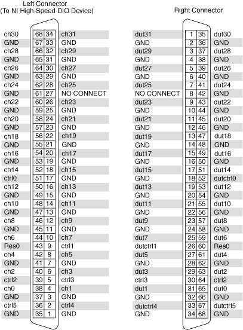

Use the NI PXI/PXIe-2515 (NI 2515) independent topology to connect a single pin of a DUT to a supported NI high-speed DIO device and parametric measurement devices. Refer to the following sections for more information about the intended use of the NI 2515.
The following figure represents the NI 2515 in the independent topology.
|
Note ctrl0, ctrl2, and ctrl3 do not route through relays, but rather pass through from the left connector to the right connector. These channels cannot be connected to the analog bus channels, busa and busb. |
With the independent topology, you can let NI-SWITCH determine the path between two specified channels by setting the intermediate channels as reserved for routing and using the niSwitch Connect Channels VI or the niSwitch_Connect function, or you can control individual relays using the niSwitch Relay Control VI or the niSwitch_RelayControl function.
The following figure identifies the pins for the NI 2515 in the independent topology.

 |
Caution Do not connect to Res0. Res0 is reserved for future use. |
|
Caution Use only the NI SHC68-C68-D5 cable to connect the supported NI high-speed DIO device to the NI 2515. The cable translates the pinout of the supported NI high-speed DIO device to the HSDIO connector on the NI 2515 so that the pinout of the DUT connector on the NI 2515 matches that of the supported NI high-speed DIO device. |
|
Note ctrl0, ctrl2, and ctrl3 do not route through relays, but rather pass through from the left connector to the right connector. These channels cannot be connected to the analog bus channels, busa and busb. |
The NI 2515 is recommended for use with the NI 6535/6536/6537, the NI 654x, the NI 655x, and the NI 6581 high-speed DIO devices, using the designated cable for connection between the NI 2515 and the supported NI high-speed DIO device. Refer to the following table for corresponding signals on the NI 2515 and supported NI high-speed DIO devices.
To use the following table, first find the high-speed DIO signal you want to route to your DUT. Look across the table row that contains the high-speed DIO signal to find the NI 2515 right connector and left connector channels necessary to route that signal. For cables recommended to connect the NI 2515 to your system, refer to NI 2515 Signal Connections.
| Pin | High-speed DIO Channel | NI 2515 Left Connector |
NI 2515 Right Connector |
||||||||
|---|---|---|---|---|---|---|---|---|---|---|---|
| NI 6535/6536/6537 | NI 654x | NI 6551/6552 | NI 6555/6556 | NI 6581 | Pin | Channel | Pin | Channel | |||
| 1 | P3.7 | DIO 31 | RESERVED | PFI 31 | RESERVED | 34 | ch31 | 1 | dut31 | ||
| 2 | GND | GND | GND | GND | GND | 33 | GND | 2 | GND | ||
| 3 | P3.5 | DIO 29 | RESERVED | PFI 29 | RESERVED | 32 | ch29 | 3 | dut29 | ||
| 4 | GND | GND | GND | GND | GND | 31 | GND | 4 | GND | ||
| 5 | P3.3 | DIO 27 | RESERVED | PFI 27 | RESERVED | 30 | ch27 | 5 | dut27 | ||
| 6 | GND | GND | GND | GND | GND | 29 | GND | 6 | GND | ||
| 7 | P3.1 | DIO 25 | RESERVED | PFI 25 | RESERVED | 28 | ch25 | 7 | dut25 | ||
| 8 | RESERVED | RESERVED | RESERVED | GND | GND | 27 | NO CONNECT | 8 | NO CONNECT | ||
| 9 | P2.7 | DIO 23 | RESERVED | DIO 23 | P2.7 | 26 | ch23 | 9 | dut23 | ||
| 10 | GND | GND | GND | GND | GND | 25 | GND | 10 | GND | ||
| 11 | P2.5 | DIO 21 | RESERVED | DIO 21 | P2.5 | 24 | ch21 | 11 | dut21 | ||
| 12 | GND | GND | GND | GND | GND | 23 | GND | 12 | GND | ||
| 13 | P2.3 | DIO 19 | DIO 19 | DIO 19 | P2.3 | 22 | ch19 | 13 | dut19 | ||
| 14 | GND | GND | GND | GND | GND | 21 | GND | 14 | GND | ||
| 15 | P2.1 | DIO 17 | DIO 17 | DIO 17 | P2.1 | 20 | ch17 | 15 | dut17 | ||
| 16 | GND | GND | GND | GND | GND | 19 | GND | 16 | GND | ||
| 17 | P1.7 | DIO 15 | DIO 15 | DIO 15 | P1.7 | 18 | ch15 | 17 | dut15 | ||
| 18 | GND | GND | GND | GND | GND | 17 | GND | 18 | GND | ||
| 19 | P1.5 | DIO 13 | DIO 13 | DIO 13 | P1.5 | 16 | ch13 | 19 | dut13 | ||
| 20 | GND | GND | GND | GND | GND | 15 | GND | 20 | GND | ||
| 21 | P1.3 | DIO 11 | DIO 11 | DIO 11 | P1.3 | 14 | ch11 | 21 | dut11 | ||
| 22 | GND | GND | GND | GND | GND | 13 | GND | 22 | GND | ||
| 23 | P1.1 | DIO 9 | DIO 9 | DIO 9 | P1.1 | 12 | ch9 | 23 | dut9 | ||
| 24 | GND | GND | GND | GND | GND | 11 | GND | 24 | GND | ||
| 25 | P0.7 | DIO 7 | DIO 7 | DIO 7 | P0.7 | 10 | ch7 | 25 | dut7 | ||
| 26 | PFI 1 | PFI 1 | PFI 1 | PFI 1 | PFI 1 | 9 | ctrl1 | 26 | dutctrl1 | ||
| 27 | P0.5 | DIO 5 | DIO 5 | DIO 5 | P0.5 | 8 | ch5 | 27 | dut5 | ||
| 28 | GND | GND | GND | X | GND | GND | GND | 28 | GND | ||
| 29 | P0.3 | DIO 3 | DIO 3 | DIO 3 | P0.3 | 6 | ch3 | 29 | dut3 | ||
| 30 | PFI 3 | PFI 3 | PFI 3 | PFI 3 | GND | 5 | ctrl3 | 30 | ctrl3 | ||
| 31 | P0.1 | DIO 1 | DIO 1 | DIO 1 | P0.1 | 4 | ch1 | 31 | dut1 | ||
| 32 | GND | GND | GND | GND | GND | 3 | GND | 32 | GND | ||
| 33 | PFI 4 | DDC CLK OUT | DDC CLK OUT | PFI 4/DDC CLK OUT | CLOCK OUT | 2 | ctrl4 | 33 | dutctrl4 | ||
| 34 | GND | GND | GND | GND | GND | 1 | GND | 34 | GND | ||
| 35 | P3.6 | DIO 30 | RESERVED | PFI 30 | RESERVED | 68 | ch30 | 35 | dut30 | ||
| 36 | GND | GND | GND | GND | GND | 67 | GND | 36 | GND | ||
| 37 | P3.4 | DIO 28 | RESERVED | PFI 28 | RESERVED | 66 | ch28 | 37 | dut28 | ||
| 38 | GND | GND | GND | GND | GND | 65 | GND | 38 | GND | ||
| 39 | P3.2 | DIO 26 | RESERVED | PFI 26 | RESERVED | 64 | ch26 | 39 | dut26 | ||
| 40 | GND | GND | GND | GND | GND | 63 | GND | 40 | GND | ||
| 41 | P3.0 | DIO 24 | RESERVED | PFI 24 | RESERVED | 62 | ch24 | 41 | dut24 | ||
| 42 | GND | GND | GND | GND | GND | 61 | GND | 42 | GND | ||
| 43 | P2.6 | DIO 22 | RESERVED | DIO 22 | P2.6 | 60 | ch22 | 43 | dut22 | ||
| 44 | GND | GND | GND | GND | GND | 59 | GND | 44 | GND | ||
| 45 | P2.4 | DIO 20 | RESERVED | DIO 20 | P2.4 | 58 | ch20 | 45 | dut20 | ||
| 46 | GND | GND | GND | GND | GND | 57 | GND | 46 | GND | ||
| 47 | P2.2 | DIO 18 | DIO 18 | DIO 18 | P2.2 | 56 | ch18 | 47 | dut18 | ||
| 48 | GND | GND | GND | GND | GND | 55 | GND | 48 | GND | ||
| 49 | P2.0 | DIO 16 | DIO 16 | DIO 16 | P2.0 | 54 | ch16 | 49 | dut16 | ||
| 50 | GND | GND | GND | GND | GND | 53 | GND | 50 | GND | ||
| 51 | P1.6 | DIO 14 | DIO 14 | DIO 14 | P1.6 | 52 | ch14 | 51 | dut14 | ||
| 52 | PFI 0 | RESERVED | RESERVED | GND | GND | 51 | ctrl0 | 52 | dutctrl0 | ||
| 53 | P1.4 | DIO 12 | DIO 12 | DIO 12 | P1.4 | 50 | ch12 | 53 | dut12 | ||
| 54 | GND | GND | GND | GND | GND | 49 | GND | 54 | GND | ||
| 55 | P1.2 | DIO 10 | DIO 10 | DIO 10 | P1.2 | 48 | ch10 | 55 | dut10 | ||
| 56 | GND | GND | GND | GND | GND | 47 | GND | 56 | GND | ||
| 57 | P1.0 | DIO 8 | DIO 8 | DIO 8 | P1.0 | 46 | ch8 | 57 | dut8 | ||
| 58 | GND | GND | GND | GND | GND | 45 | GND | 58 | GND | ||
| 59 | P0.6 | DIO 6 | DIO 6 | DIO 6 | P0.6 | 44 | ch6 | 59 | dut6 | ||
| 60 | RESERVED | RESERVED | RESERVED | RESERVED | NO CONNECT | 43 | Res0 | 60 | Res0 | ||
| 61 | P0.4 | DIO 4 | DIO 4 | DIO 4 | P0.4 | 42 | ch4 | 61 | dut4 | ||
| 62 | GND | GND | GND | GND | GND | 41 | GND | 62 | GND | ||
| 63 | P0.2 | DIO 2 | DIO 2 | DIO 2 | P0.2 | 40 | ch2 | 63 | dut2 | ||
| 64 | PFI 2 | PFI 2 | PFI 2 | PFI 2 | PFI 2 | 39 | ctrl2 | 64 | ctrl2 | ||
| 65 | P0.0 | DIO 0 | DIO 0 | DIO 0 | P0.0 | 38 | ch0 | 65 | dut0 | ||
| 66 | GND | GND | GND | GND | GND | 37 | GND | 66 | GND | ||
| 67 | PFI 5 | STROBE | STROBE | PFI 5/STROBE | GLOBAL CLOCK 0 | 36 | ctrl5 | 67 | dutctrl5 | ||
| 68 | GND | GND | GND | GND | GND | 35 | GND | 68 | GND | ||